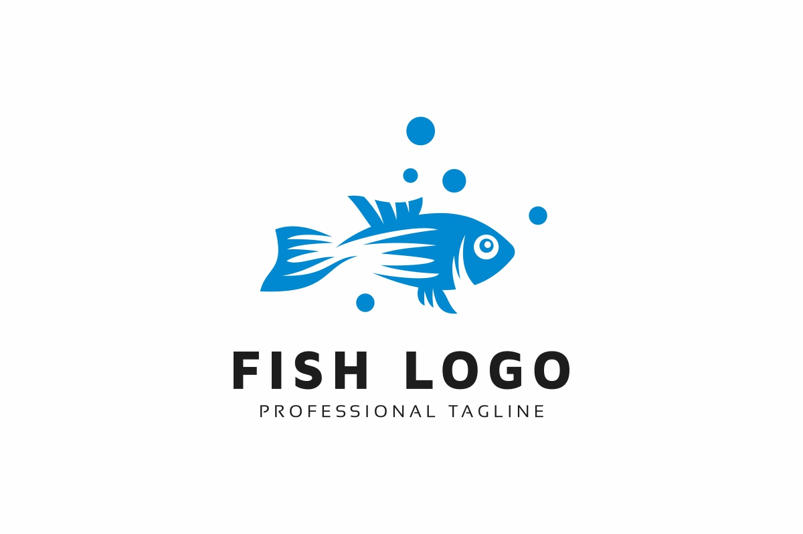

Martins Marlin Fish
Bass
Largemouth
Fresh Waters
Small Fish
Bluegill
Lepomis macrochirus
Lake Biwa/Fresh Waters
Insects
"The sea, once it casts its spell, holds one in its net of wonder forever."
-Jaques Cousteau
Fresh Waters
Lake Biwa
Largest Freshwater Lake in Japan